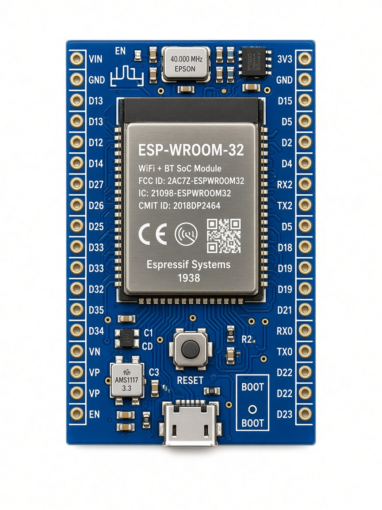
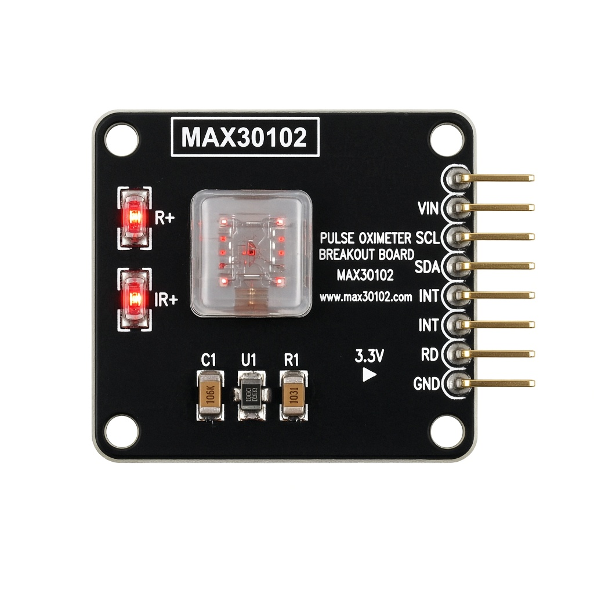
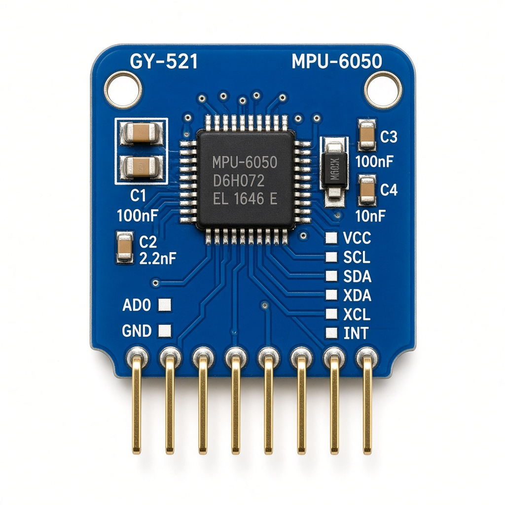
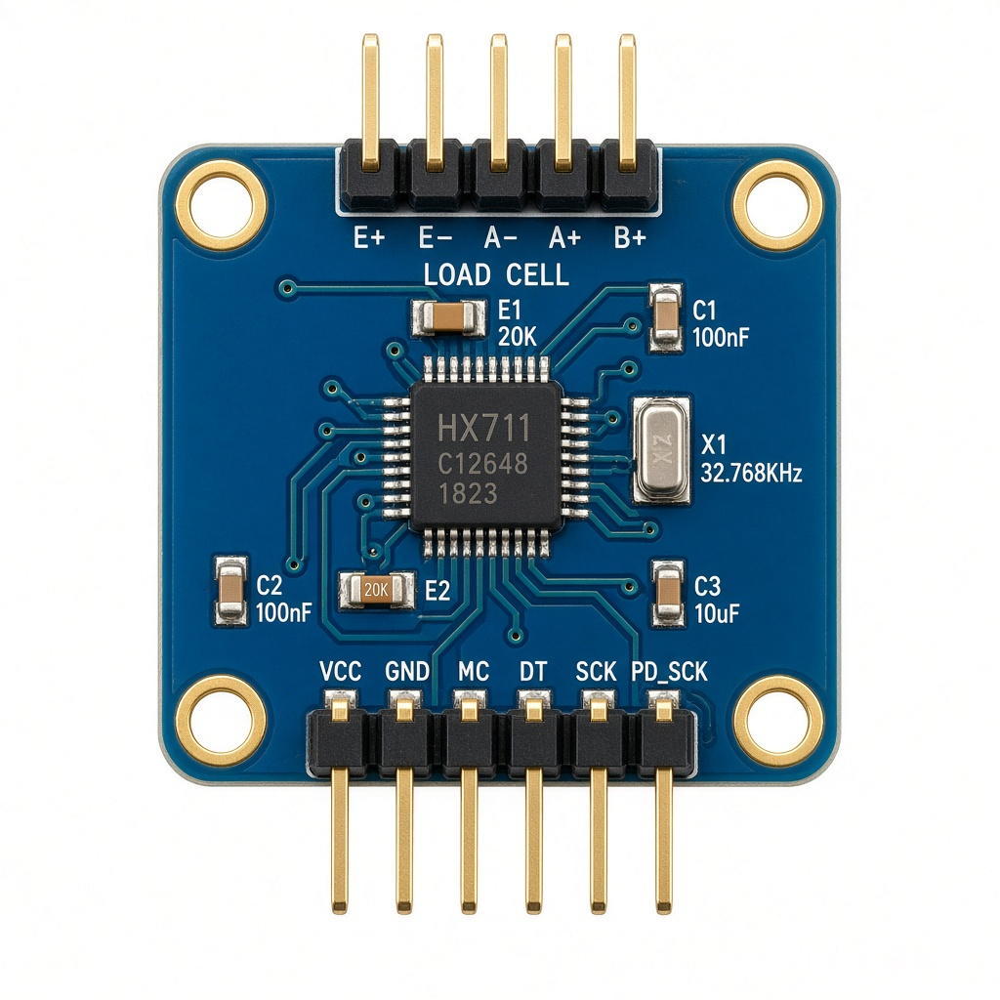
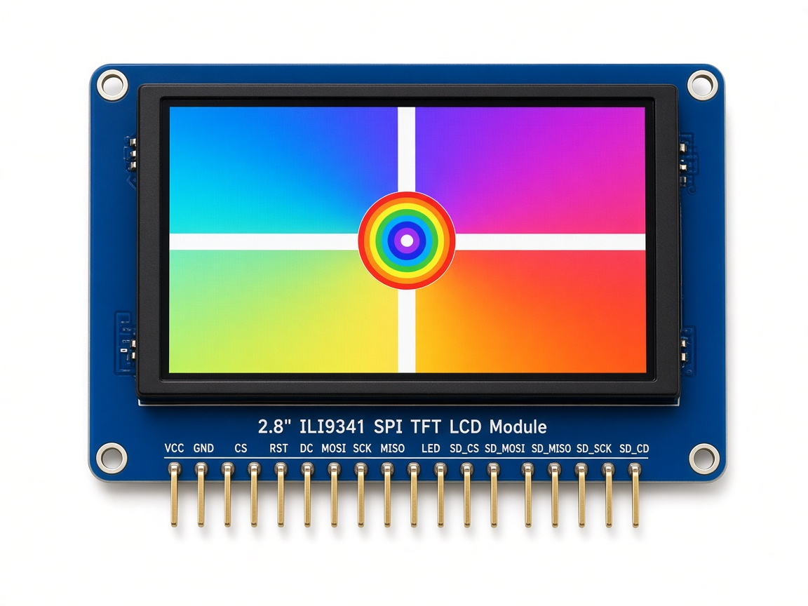
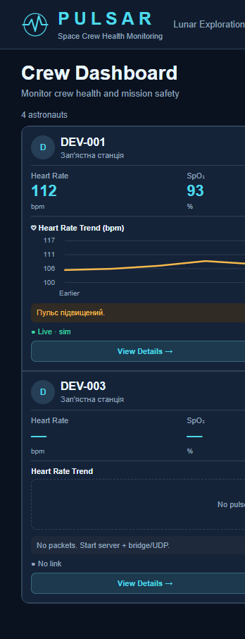
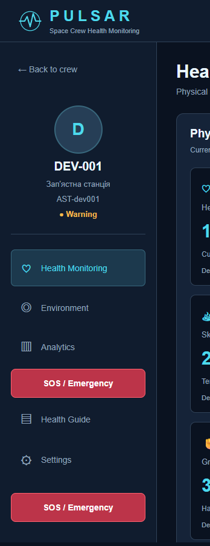

Радіація
Накопичений ризик і потреба бачити експозицію поруч із самопочуттям.
NASA Space Apps 2026 · Health Monitoring Software
Щоб екіпаж сам бачив зміни здоров’я вчасно — і міг діяти, коли Земля далеко.
Годинник на зап’ясті + станція для всієї команди
Photo: Unsplash · Earth from space (stock)
The challenge
NASA формулює задачу прямо: на довгих польотах астронавти самі мають помічати зміни в собі. Потрібне ПЗ, яке збирає показники здоров’я й допомагає оцінити стан і діяти.
Challenge: Create Health Monitoring Software for Astronauts on Space Missions
Why it matters
Накопичений ризик і потреба бачити експозицію поруч із самопочуттям.
Стрес, сон, настрій — поведінкове здоров’я так само критичне, як пульс.
Повітря, CO₂, тиск кабіни впливають на стан не менше за навантаження.
Серце, м’язи, кістки, хват і маса — треба бачити дрейф від «своєї норми».
Затримка зв’язку: чекати відповіді центру вже запізно — рішення на борту.
Імунітет, серце, кістки, поведінка — зміни тихі, поки не стануть кризою.
The gap today
Показники в різних системах. Команді важко зібрати «як ми зараз?» в одну мить.
Одне число на екрані не показує, що стан погіршується третій день поспіль.
Побачити червоний статус мало — треба зрозуміти, що перевірити далі й кого попередити.
Our answer
Особистий сенсор завжди з астронавтом. Спільна станція дає команді одну живу картину здоров’я — щоб оцінити ризик і діяти разом.

The watch
Серце, кисень у крові, температура шкіри, рух і навантаження — без «зайди в медблок».
На екрані — свій стан тут і зараз. Навіть коли лінк зі станцією тимчасово мовчить.
Якщо зв’язок падає, записи лишаються на пристрої й пізніше потрапляють у спільну картину.




On the wrist
Місце для ваших фото зібраного годинника — на столі, на руці, з екраном у роботі.
The station
Хто в нормі, хто в попередженні, хто потребує уваги — без збирання файлів вручну.
Тренди, траєкторія за дні, підказки «що перевірити» — щоб зрозуміти зміну, а не злякатись спалаху.
SOS, глибока перевірка, check-in самопочуття, контекст середовища кабіни — рішення лишаються з екіпажем.
Evaluate
Станція підсвічує, у кого росте пульс, падає кисень, накопичується стрес. Командир і медичний офіцер ділять одну живу панель.


Act
How PULSAR closes the loop
Годинник безперервно знімає показники з тіла; станція додає картину екіпажу й кабіни.
Статуси, тренди за дні, відхилення від власної бази, зрозумілі попередження мовою місії.
Рекомендації наступного кроку, SOS, персональна картка — без очікування Землі.
Саме це просить NASA у challenge: не ще один лог сенсорів, а інструмент, з яким екіпаж керує своїм здоров’ям на борту.
Thank you
Годинник на зап’ясті і Станція — щоб зміни здоров’я було видно вчасно.
Q & A NASA Space Apps Challenge 2026